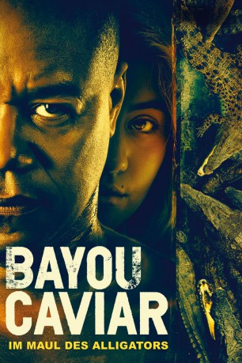

#12145 Im Maul des Alligators
Alternativ: Bayou Caviar (Englischer Titel)
 
 IMDB-Wertung: 5.9 / 10
IMDB-Wertung: 5.9 / 10  Tomatometer: 20
Tomatometer: 20  Metascore: 36
Metascore: 36 
Rodney ist ein ehemaliger Star-Boxer, der sich als Türsteher durchs Leben schlägt. Er träumt vom großen Comeback im Ring. Doch daraus wird erstmal nichts, denn Rodney gerät an den russischen Gangsterboss Yuri. Dessen Markenzeichen ist der "Bayou Caviar": Unliebsame Konkurrenten werden hungrigen Alligatoren in den Sümpfen Louisianas zum Fraß vorgeworfen. Yuri zieht Rodney immer tiefer in einen mörderischen Strudel aus Gewalt und Verrat. Aus dem Traum vom großen Titel wird ein Kampf ums nackte Überleben.
Jahr: 2018
Dauer: 111 Minuten
FSK: 16
Land: USA Studio: Gravitas VenturesTonspuren: DD5.1 - ,
Untertitel: Deutsch,
Auflösung: 1080p (1920x808) Größe: 4249 MB
Genre: Thriller, Drama, Krimi, Mystery
Regisseur: Cuba Gooding Jr.
Drehbuch: Eitan Gorlin, Cuba Gooding Jr.
Soundtrack: Jeffery Alan Jones
Darsteller:
 Cuba Gooding Jr. als Rodney Jones
Cuba Gooding Jr. als Rodney Jones Famke Janssen als Nic
Famke Janssen als Nic Richard Dreyfuss als Yuri
Richard Dreyfuss als Yuri- Lia Marie Johnson als Kat
 Gregg Bello als Isaac
Gregg Bello als Isaac- Katharine McPhee als Shelly
 Ken Lerner als Shlomo
Ken Lerner als Shlomo- Sam Thakur als Rafi
 James Moses Black als Sasha
James Moses Black als Sasha- Tanyell Waivers als Allison
- Anna Schafer als Shira
 Shane Callahan als Benji
Shane Callahan als Benji- Pedro Lucero als Miguel
- Modi als Rabbi Rosenfeld
- Nadine Lewington als Amber
- Susan McPhail als Marjorie
- Kedrick Brown als Emmanuel Johnson
- John Jabaley als Website CEO
 David Aranovich als Detective Olson
David Aranovich als Detective Olson- Hallie Shepherd als Lindsey
 Terence Rosemore als Armando
Terence Rosemore als Armando- Eric Colley als Arick
- Nancy Nave als Marlene Nguyen
 Dane Rhodes als Pete
Dane Rhodes als Pete Renell Gibbs als Tyrone
Renell Gibbs als Tyrone Anthony Michael Frederick als Boxing Ref
Anthony Michael Frederick als Boxing Ref- Michael Collier als Ringside Physician
- Issa Abou-Issa als Reporter
- Katrell Dixon als Goon Mucle
 Luke Hawx als Bouncer
Luke Hawx als Bouncer- Roger Magee II als Paparazzi #1
- Matthew McClain als Russian Henchman
 Julia Holt als Club Goer / Reporter / Pedestrian (uncredited)
Julia Holt als Club Goer / Reporter / Pedestrian (uncredited)- Bruce Vincent Logan als Bistro Diner (uncredited)
- Alexei Kovalev als Alex
- Wayne Dehart als Coach Delroy
- Leicester Landon als Tina
- Regis Prograis als Julio
- Sunday Theodore als Daisy
- Patrick R. Pierre als Fighter #1
- Michael Thomson Jr. als
- Tony Beard als News Reporter
- Jeffrey Klemmer als Russian Mobster
- Edward Parker als Orthodox Man
 Ron M Patterson als Bouncer
Ron M Patterson als Bouncer- Rey Reynaud als Reporter
- Marlene B. Russell als Reporter (uncredited)
- Brandon J Williams als Fan (uncredited)
- Jesse Yarborough als News Cameraman (uncredited)
Datei: X:\2018(G-M)\Im Maul des Alligators (2018, FSK16, 1920x808).mkv seit 30.12.2019
Festplatte: HD 2018(G-Z)-2019(A-Z)
 Es gibt insgesamt 138 Filme in der Gruppe '2018(G-M)'
Es gibt insgesamt 138 Filme in der Gruppe '2018(G-M)'